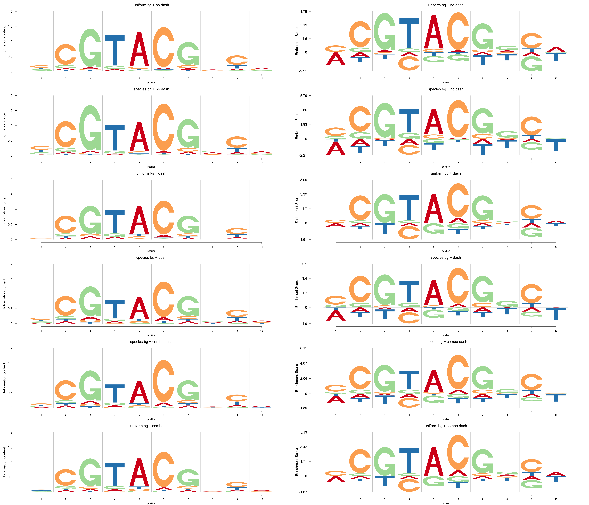

#path: path to the data folder
#cb:whether combine all pfms or not. 'T' or 'F'
#bgs:'uniform' or 'specific'
library(grid)
library(gridBase)
library(Logolas)
plantTF=function(path,cb=T,bgs='specific'){
library(dash)
#read all the TF names from the infomation page
nam=list.files(path)
#record the original pwm from the website as a list
pwm_original=list()
#record the transformed pfm as a list
pfm_indi=list()
#record the pwm after applying the dash
pwm_dash=list()
#a large mattrix combine all the pfms
pfm_cb=c()
#record the number of positions for each pwm
npos=c()
#record the number of sequences of each pfm
site=c()
for(i in 1:length(nam)){
#read each pwm file from the website
readfile=readLines(paste(path,'/',nam[i],sep = ''))
#extract the pwm
pwm=matrix(as.numeric(as.character(unlist(strsplit(readfile[13:(length(readfile)-3)],split = '\t')))),nrow = 4,byrow = F)
rownames(pwm)=c('A','C','G','T')
colnames(pwm)=1:ncol(pwm)
pwm_original[[i]]=pwm
#extract the number of sites
nsites=as.numeric(as.character(unlist(strsplit(readfile[12],split = ' '))[grep('nsites',unlist(strsplit(readfile[12],split = ' ')))+1]))
site[i]=nsites
#extract the background probabilities
if(bgs=='specific'){
bg=as.numeric(strsplit(readfile[8],split = ' ')[[1]][c(2,4,6,8)])
}else if(bgs=='uniform'){bg=rep(0.25,4)}
#
pfm=round(pwm*nsites)
if(cb==T){
pfm_cb=cbind(pfm_cb,pfm)
}
npos[i]=ncol(pwm)
pfm_indi[[i]]=pfm
pwm=dash((pfm),optmethod = 'mixEM',mode = bg)
pwm=(pwm$posmean)
rownames(pwm)=c('A','C','G','T')
colnames(pwm)=1:ncol(pwm)
pwm_dash[[i]]=pwm
}
if(cb==T){
pwm_cbdash=dash((pfm_cb),mode=bg,optmethod = 'mixEM')
pwm_cbdash=(pwm_cbdash$posmean)
pwm_cb=list()
for(i in 1:length(npos)){
pwm=pwm_cbdash[,1:npos[i]]
rownames(pwm)=c('A','C','G','T')
colnames(pwm)=1:ncol(pwm)
pwm_cbdash=pwm_cbdash[,-(1:npos[i])]
pwm_cb[[i]]=pwm
}
}else{pwm_cb=NULL}
results=list(pfm=pfm_indi,pwm_original=pwm_original,pwm_dash=pwm_dash,pwm_cbdash=pwm_cb,bg=bg,nseq=site,npos=npos)
return(results)
}
library(Logolas)
color_profile = list("type" = "per_row",
"col" = RColorBrewer::brewer.pal(4,name ="Spectral"))
##########################
#plots
Ach=plantTF("../data/Ach")## Loading required package: SQUAREM## Loading required package: LaplacesDemon##
## Attaching package: 'dash'## The following objects are masked from 'package:Logolas':
##
## dash, mixEM, mixIP, w_mixEM
This webpage has been developed using RStudio's R Markdown and John D Blischak's workflowr package.